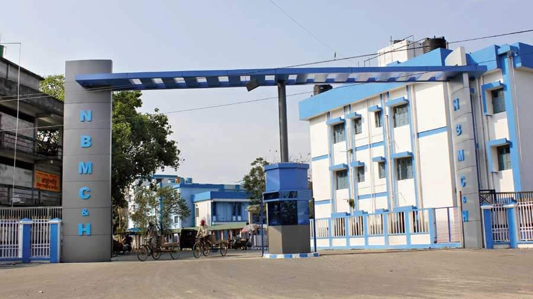
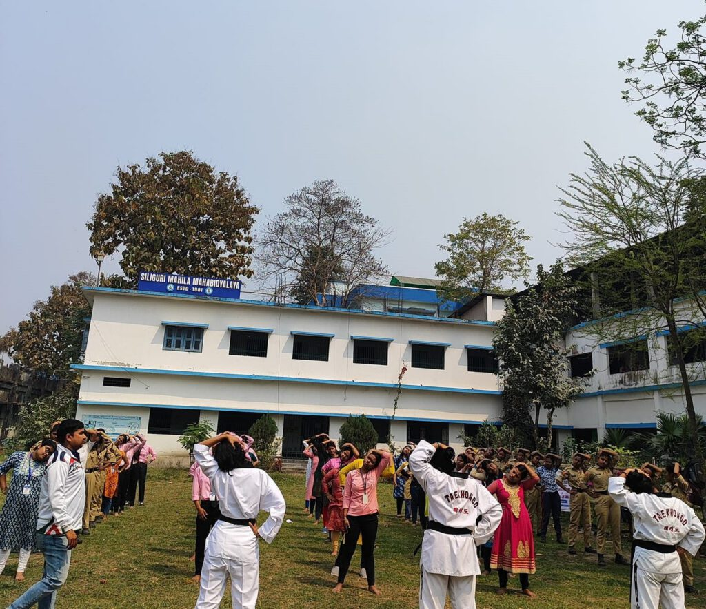
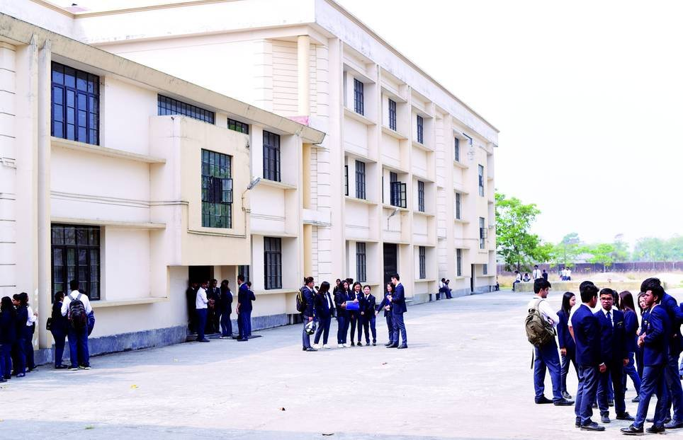

Are you on the lookout for a reputable college in Siliguri? Look no further as we explore the top educational institutions in this bustling city. Siliguri is home to some great colleges that offer quality education in a conducive environment, supporting students in both their academic as well as overall personal growth.
We have compiled a list of top-notch colleges in Siliguri as stated below-
Government Colleges:-
Siliguri College

Established in 1950, Siliguri College is the first and the oldest higher educational institute in Siliguri. It is affiliated to the University of North Bengal. The college was founded with the objective of providing quality, innovative, and affordable education to students from diverse communities and economic backgrounds. The college encourages the participation of students in academic and co-curricular activities to help them become prepared for a successful life.
Courses Offered: B.A., B.Sc., BBA, BCA, M.A., and M.Sc
Fees: The total course fee ranges between Rs. 10000 to 185000.
Website- http://siliguricollege.org.in/
Contact Details:
Mobile No.- 0353 243 6590
Address: Siliguri College Campus Rd, Ward 17, Hakim Para, Siliguri, West Bengal 734001
Siliguri College of Commerce

Siliguri College of Commerce, founded in 1962 in Siliguri, West Bengal, stands as a shining example of academic excellence affiliated with the University of North Bengal. Renowned for its comprehensive undergraduate commerce courses, the institution boasts a dedicated faculty, state-of-the-art facilities including a well-equipped library and computer center, and a vibrant campus life that fosters intellectual growth and friendly connections among students.
Courses Offered: UG Courses in Arts and Sciences and PG Courses in Bengali and Geography
Fees: The fees for B.Com (Hons) and BBA (Hons) are around INR 2400 and INR 2250 per semester, respectively.
Website: https://www.siliguricollegeofcommerce.org/
Contact Details:
Mobile No.- 0353 243 2594
Email: siliguricollegeof_commerce@yahoo.com
Address: College Para, Hakim Para, Siliguri, West Bengal 734001.
Surya Sen College

Established in 1998, Surya Sen Mahavidyalaya, also known as Surya Sen College, is a prestigious undergraduate institution in Siliguri, West Bengal, India. Renowned for its affordability as a government-aided college, it offers diverse undergraduate courses in Arts, Science, and Commerce, catering to the academic aspirations of students with a blend of tradition and innovation.
Course Offered: B.A., B.Sc, and B.Com
Fees: The total course fees ranges between Rs. 11,310 to Rs.13,830.
Website: https://suryasencollege.org.in/
Contact Details:
Mobile No.- 094763 87939
Email: suryasen@suryasencollege.org.in
Address: Surya Sen Colony, Babupara, Siliguri, West Bengal 734004
Acharya Prafulla Chandra Roy Government College

Established in 2010, this college was named after Acharya Prafulla Chandra Roy, a renowned Indian scientist. Situated in a peaceful environment, it boasts well-equipped classrooms and labs to facilitate effective teaching and learning. Nestled within its modern facilities are furnished classrooms and well-equipped laboratories, serving as the nurturing ground where students can not only academically excel but also intellectually flourish.
Courses Offered: The college offers undergraduate courses in Botany, Chemistry, Physics, Mathematics, and Zoology.
Fees: The fee for the undergraduate courses is around Rs. 3000 per year.
Website: http://www.apcrgc.org
Contact Details:
Mobile No.- 0353 257 1340
Email: apcrgc.admission@gmail.com
Address: Himachal Vihar Phase 1, Matigara, Siliguri, West Bengal 734010
North Bengal Medical College

North Bengal Medical College stands as a pioneering institution in Siliguri, being the foremost, largest, and sole provider of medical education in the region. Founded in 1968, it holds affiliation with WBUHS (West Bengal University of Health Sciences). Situated within its campus are North Bengal Dental College and College of Nursing. The institution extends a spectrum of educational opportunities encompassing undergraduate, postgraduate, and paramedical courses across diverse medical fields.
Courses Offered: MBBS, MD, MS
Fees: The annual fee ranges between Rs.12000 to 60000
Website: https://nbmch.ac.in/
Contact Details:
Mobile No.- 0353258 5478
Email: principal@nbmch.ac.in
Address: D-5 Quarter, Sushruta Nagar, Dist Darjeeling, West Bengal, 734012
Siliguri Mahila Mahavidyalaya

Established in 1981, the women’s college in Siliguri is the government’s sole recognized institution, offering undergraduate courses in humanities, and affiliated with the University of North Bengal. It serves as a beacon of empowerment for women from economically and socially disadvantaged backgrounds, providing not just education but also hope and opportunity for a brighter future.
Courses Offered: B.A. (Hons.), B.A. (General)
Fees: The course fees ranges between Rs. 1000 to Rs.16000
Website: https://smm.ac.in/
Contact Details:
Mobile No.- 089187 22346
Email-slg_smm@yahoo.com
Address: No. 1, Dabgram Rabindra Sarani, Siliguri, West Bengal, 734006, India.
Private Colleges:-
Salesian College

Salesian College (Autonomous), a Catholic Church minority educational institute was established in 2009 in Siliguri. The college was founded to cultivate individuals to make them noble citizens and leaders. The campuses boast libraries, tech-enabled classrooms, laboratories, auditoriums, AV halls, reading rooms, knowledge centers, and sports facilities. The college has a strong commitment to social responsibility, opening its doors to first-generation students from local tea gardens and operating a community radio station.
Courses Offered: BA, BA Hons, B.Com Hons, B.Sc Hons, B.Voc, BBA, BCA, BSW, and MA.
Fee Details: The total course fees range approximately between Rs 1,16,000 and Rs 3,00,000
Website: https://salesiancollege.ac.in
Contact Details:
Mobile No. 091445 47173
Email Id: admissions@salesiancollege.com
Address: Ward 42, Don Bosco Colony, Siliguri, West Bengal 734004
Inspiria Knowledge Campus

Established in 2015, Inspiria Knowledge Campus bridges the divide between theoretical learning and practical application. It encourages student participation in real-world projects, field visits, internships, contests, and studio practice, to help them acquire industry-relevant insights and skills. It offers modern facilities such as a fitness center, smart classrooms, advanced labs, a startup innovation center, a futsal arena, a startup innovation center, and decent hostel facilities.
Courses Offered: BBA, BCA, and B.Sc
Fee Details: The total fees range across courses from Rs 2,82,000 to Rs 3,72,0001.
Website: https://inspiria.edu.in
Contact Details
Mobile No.– 8900755550
Email Id: contact@inspiria.edu.in
Address: Ward 42, Don Bosco Colony, Siliguri, West Bengal 73400
Siliguri Institute of Technology

Siliguri Institute of Technology (SIT) is an engineering and management institute that was founded in 1999. The institute is affiliated with MAKAUT. The institute is dedicated to promoting excellence in education, research, and innovation. It was established to provide technical courses to the students.
Courses Offered: B.tech, BHM, BBA, BCA, MBA and MCA.
Fee Range: The fee structure across different courses varies between Rs 2,60,330 to Rs 4,50,000.
Website: https://www.sittechno.org/
Contact Details:
Mobile No.- 353 2778002
Email: info@sittechno.org.Website: https://www.sittechno.org/
Address: S.I.T Campus, Salbari, Sukna, Darjeeling, West Bengal, 734009
IIAS School of Management

The International Institute of Advanced Studies was founded in 1990. It offers quality undergraduate courses in business management and hotel management. The course curriculum in this institute makes sure that quality and industry-relevant skills and education are offered to students to make them stand out in the career of their choice.
Courses Offered: B.sc in Hospital and Hotel Administration and BBA (Hons.)
Fees: The course fees is Rs. 95000 per year
Website: https://www.iias.org.in/
Contact Details:
Mobile No.- 096747 44818
Email: iias.siliguri@iias.org.in
Address: Hill Cart Rd, Dagapur, Siliguri, Bara Gharia, West Bengal 734002
Gyan Jyoti College

Established in 2005, Gyan Jyoti College was created to help students from North Bengal and Northeastern states of India with their higher education. It’s part of the Vivekananda Academic Foundation and follows Swami Vivekananda’s ideas to make students independent.
Courses Offered: B.A., B.Com, B.Sc, BBA and BCA.
Fees: The total course fees ranges between Rs. 1.25 lakh to Rs. 2.3 lakh
Website: https://gyanjyoticollege.in/
Contact Details:
Mobile No.- 094347 45545
Email: admission@gyanjyoticollege.in
Address: Basundhara, NH-55 Near, Dagapur, Siliguri, West Bengal 734003
Indian Institute of Legal Studies

Indian Institute of Legal Studies was founded in to provide legal education to students from North Bengal. It is the only private college to offer legal courses in Siliguri. The college provides quality education along with modern amenities on the campus. The college organizes various educational workshops and seminars to impart both theoretical and practical education to its students.
Courses Offered: BA.LLB, B.COM.LLB, BBA.LLB, LLB, LLM, M.A. (Public Administration and Governance)
Fees: The average fees is Rs. 11.75 lakh
Website: https://www.iilsindia.com/
Contact Details:
Mobile No.- 94340 74701
Email: admissioniils@gmail.com
Address: Dagapur, Siliguri, P.O. Salbari, P.S. Matigara, Darjeeling, West Bengal, 734002
To sum it up, Siliguri’s best colleges are calling out to those who are curious, ambitious, and dream big. The academic programs, extracurricular activities, and campus life that these colleges provide are all worthwhile. The colleges in Siliguri offer a platform for comprehensive education and personal development to its population regardless of their interests in the arts, sciences, or management. These educational institutions continue to be vital in fostering the next wave of leaders, intellectuals, and innovators in Siliguri, as students strive to mold their destinies.